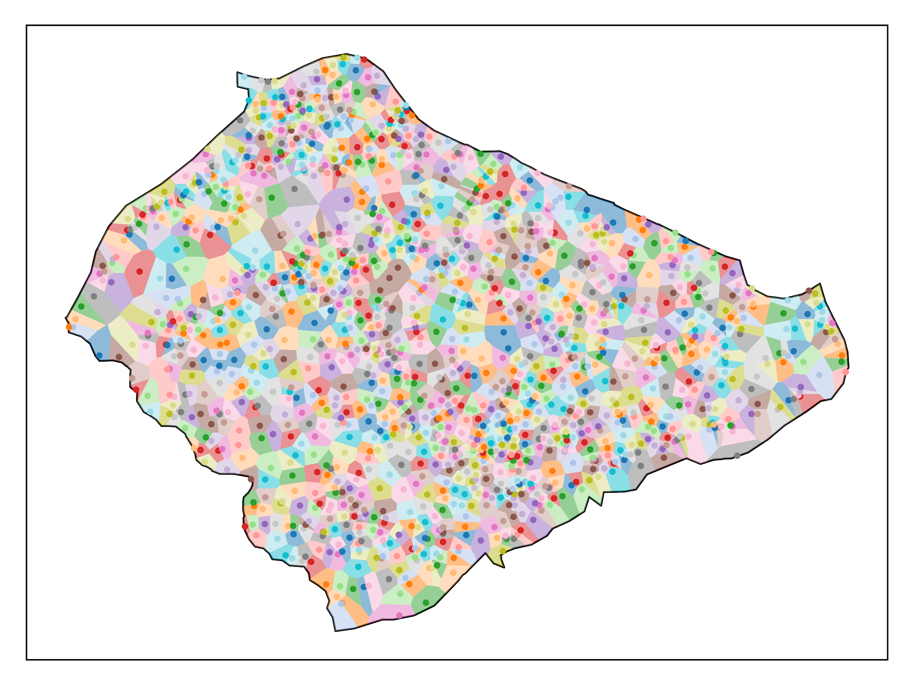

Creating a village-level shapefile for Pakistan using a Voronoi Tessellation
2020-03-31

Using the latitude and longitude coordinates of human settlements in Pakistan, i create polygons that approximate the shape of villages.I recently found a shapefile hosted on the UN's Humanitarian Data Exchange (HUMDATA) portal which contains the coordinates of villages in Pakistan:


Village level shapefiles are extremely hard to come by, and most countries don't publicly release data at such a fine level of spatial disaggregation. However, conducting analysis at this level can drastically augment statistical power by increasing the number of observations. Consider the relative quantities of various administrative units in Pakistan:
Districts are probably the most common sub-national administrative units of analysis in econometrics. In Pakistan, Tehsil and (sometimes) Union Council level data and shapefiles are available, allowing one to go below the district level. Even so, there are 46 times more villages than Union Councils and 1,696 more villages than Districts. If one were to conduct a 10 period panel regression using districts, we would have n=1,540. If the same regression were conducted with villages, we would have n=2,612,170.

As remarkable as finding such a file is, the structure of the data is rather unhelpful: villages are identified as one-dimensional points. This disables many of the most useful properties of having administrative boundary shapefiles. Imagine trying to do any analysis with a shapefile of U.S. States, but instead of having polygons denoting state boundaries, you just had the population centers:

Suppose you wanted to know what percent of a state was covered in cropland versus forest (i.e., calculate zonal statistics), or suppose you had the coordinates of every walmart in the U.S., and wanted to count how many were in each state (i.e., perform a spatial join). Though this problem is less severe with village-level points as they are much closer together, the overall problem remains.
Thus, to make this shapefile more useful, we must turn points into polygons. The most intuitive way of doing so is to generate a Voronoi tessellation; this creates polygons from input coordinates such that any point within a polygon is closer to its input coordinate than any other:

If you're interested in the specifics of how a Voronoi tessellation works, Nico Belmonte has a great blog post on the subject.
Using the geovoronoi and geopandas packages in Python it was simple enough to create a voronoi polygons from the points in the original shapefile. Consider the example of Gujrat:

1 2 3 4 5 6 7 8 9 10 11 12 13 14 15 16 17 18 19 20 21 22 23 24 25 26 27 28 29 30 31 32 33 34 35 36 37 38 39 40 41 42 43 44 45 46 47 48 49 50 51 52 53 54 55 56 57 58 59 60 61 62 63 64 65 66 67 68 69 70 71 72 73 74 75 76 77 78 79 80 81 82 83 84 85 86 87 88 89 90 91 92 93 94 95 96 97 98 99 100 101 102 103 104 105 106 107 108 109 110 111 112 113 114 115 116 117 118 119 120 121 122 123 124 125 | import logging
import matplotlib.pyplot as plt
import numpy as np
import geopandas as gpd
import pandas as pd
from geovoronoi import coords_to_points, points_to_coords, voronoi_regions_from_coords
from geovoronoi.plotting import subplot_for_map, plot_voronoi_polys_with_points_in_area
import os
from matplotlib.pyplot import figure
from fuzzywuzzy import fuzz
from fuzzywuzzy import process
from fuzzywuzzy.fuzz import ratio
import multiprocessing
import shutil
plt.switch_backend('agg')
logging.basicConfig(level=logging.INFO)
geovoronoi_log = logging.getLogger('geovoronoi')
geovoronoi_log.setLevel(logging.INFO)
geovoronoi_log.propagate = True
arcdir="/data/eg-cluster-dir/eg-username/"
regdir="/Users/ollie/PakistanPoints/"
arc=True
if arc:
dbf=arcdir+"/Pakistan Village Shapefile/PAK_Settlements_NGA_2017_20181122.dbf"
shp=arcdir+"Admin Boundaries/District_Boundary.shp"
pakistan_voronois = arcdir+"Pakistan Voronoi/"
else:
dbf=regdir+"Pakistan Village Shapefile/PAK_Settlements_NGA_2017_20181122.dbf"
shp=regdir+"Admin Boundaries/District_Boundary.shp"
pakistan_voronois = regdir+"/Pakistan Voronoi/"
village=gpd.read_file(dbf)
village=village[village['PROVINCE']=="Punjab"]
village.DISTRICT=village.DISTRICT.str.upper()
areas=gpd.read_file(shp)
areas=areas[areas['PROVINCE']=='PUNJAB']
districts=[]
for i in areas.DISTRICT:
districts.append(i)
threading=True
if threading:
def doVoronoiForDistrict(districtNumber):
i=districts[districtNumber-1]
if i=="MUZAFARGARH":
ii='MUZAFFARGARH'
if i=="D G KHAN":
ii='DERA GHAZI KHAN'
if i=="T. T SINGH":
ii='TOBA TEK SINGH'
if i=="R Y KHAN":
ii='RAHIM YAR KHAN'
villages=village[village['DISTRICT']==i]
if len(villages)==0:
villages=village[village['DISTRICT']==ii]
villages.reset_index(inplace=True)
villages=villages.iloc[:10]
coords = np.vstack((villages.LONG, villages.LAT)).T
district=str(i)
dist_dir=pakistan_voronois+district
try:
os.mkdir(dist_dir)
except:
shutil.rmtree(dist_dir, ignore_errors=True)
os.mkdir(dist_dir)
area=areas[areas['DISTRICT']==i]
print('CRS:', area.crs) # gives epsg:4326 -> WGS 84
area_shape = area.iloc[0].geometry # get the Polygon
# use only the points inside the geographic area
pts = [p for p in coords_to_points(coords) if p.within(area_shape)] # converts to shapely Point
coords = points_to_coords(pts) # convert back to simple NumPy coordinate array
#del pts
#
# calculate the Voronoi regions, cut them with the geographic area shape and assign the points to them
#
poly_shapes, pts, poly_to_pt_assignments = voronoi_regions_from_coords(coords, area_shape)
villages.drop(columns={'geometry'}, inplace=True)
villages['geometry'] = None
count=-1
#quit()
for i in poly_to_pt_assignments:
count=count+1
try:
for f in i:
villages.loc[[f],'geometry']=poly_shapes[count]
#print("polygon:",count,"point:", f)
except:
#print("skipped", "polygon:",count,"point:", f)
pass
villages.to_file(dist_dir+"/"+district+".dbf")
fig, ax = subplot_for_map()
plot_voronoi_polys_with_points_in_area(ax, area_shape, poly_shapes, coords, poly_to_pt_assignments)
#plot_voronoi_polys_with_points_in_area(ax, area_shape, poly_shapes, coords) # monocolor
plt.tight_layout()
plt.savefig(dist_dir+"/"+district+'.png',dpi=1000)
return
p = multiprocessing.Pool(processes=multiprocessing.cpu_count()-1)
for i in p.imap_unordered(doVoronoiForDistrict, range(len(districts))):
print(i)
|
The procedure is relatively simple, but the tessellation is computationally intensive, and would not be feasible on a personal computer at this scale. I threaded the tessellation for each district and ran the computation on two nodes of Oxford's Advanced Research Computing (ARC) high-throughput cluster, and it still took over 19 hours. However, I did it so you don't have to! Shapefiles for all districts in Punjab, Pakistan, can be downloaded here.